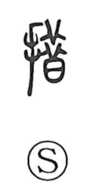

措

Kun: oku | On: so
to place ・ to set ・ measures ・ to take steps
Explanation
A phono-semantic character formed with the hand radical 扌, indicating a manual action, and 昔 as the phonetic, which supplies the reading so. In the Shuowen it is glossed as “to place,” the core sense of setting something down where it belongs. From this develops the idea of disposing and arranging affairs so they are properly settled and at ease: hence 措置, the taking of measures to manage matters; 措辞, the setting of words—wording and phrasing; 措大, a gifted scholar capable of handling weighty business; and 挙措, one’s bearing and behavior—the way one observes and places oneself. At heart, the character expresses placing and orderly arrangement.